- 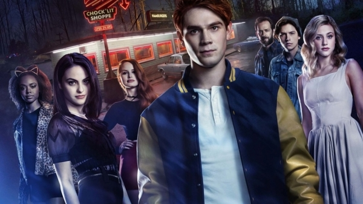
- 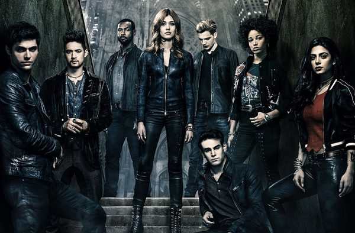
- 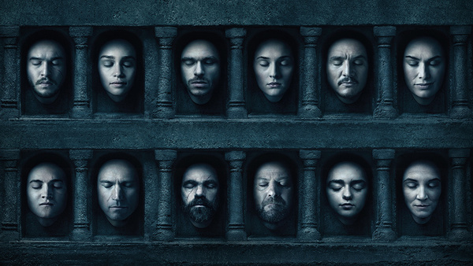
Серіал розповідає про старшокласника Арчі та його друзів, які вирішують дослідити невелике містечко Рівердейл, чим далі вони досліджують місто тим більше пізнають його похмурі таємниці.
Інформація для серіаломанів
Скажи мені, який серіал дивиться твій друг, і я скажу хто ти
Ви знаєте значення слів, які звичайній людині можуть здатися дивними. Хіатус, рекап, процедурал, кліфгенгер ...
До речі, для вас арка - це не архітектурний елемент, а пілот - це не людина, керуючий літаком. Якщо це правда, то ласкаво просимо.
Тут ти знайдеш 3 телесеріала, які, можливо, наповнять твої буденні дні магією та містикою.
Рівердейл
Сюжет
Серіал розповідає про старшокласника Арчі та його друзів, які вирішують дослідити невелике містечко Рівердейл, чим далі вони досліджують місто тим більше пізнають його похмурі таємниці.
Сезон 1
Вважається, що жити в маленьких містах нудно, зате безпечно, але жителі маленького американського містечка Рівердейл — з цим посперечались би. У цьому містечку всі один з одним знайомі і протягом вже багатьох років кожна з сімей зберігає свої таємниці. На перший погляд дійсно здається, що в Рівердейл нічого не відбувається, але тут, як і скрізь, часто розгортаються драми, пристрасні любовні історії і кровна ворожнеча. Своєрідний спокій жителів Рівердейл порушився тоді, коли без вісті зник Джейсон Блоссом, спадкоємець великої компанії з виробництва кленового сиропу. Вважалося, що він потонув, але через деякий час тіло хлопця таки було знайдено з кулею в лобі. Хто і навіщо вбив Джейсона? Чи причетна до цього його сестра-близнючка? Або, може бути, це зробив ватажок місцевого злочинного угруповання? Так чи інакше, а смерть цього рудого хлопця запустила незворотний процес. Тепер кожен житель Рівердейл повинен дуже постаратися, щоб не відкрити своїх секретів. Непричетних і невинних людей в цьому місті не залишилося. Кожен так чи інакше встиг забруднитися і тепер настав час скинути брехливі маски. Але при чому тут Арчі, Бетті, Вероніка, Шеріл і Джагхед? Адже вони звичайні підлітки, на думці у яких повинні бути тільки розваги. Але немає, вони теж заручники цієї історії і тому зобов'язані зіграти свої ролі
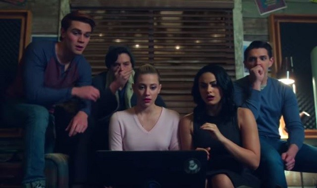Сезон 2
Головні герої виявили, що у історії про зародження Рівердейла є своя таємниця. Раніше ця земля належала Зміям, однак ті були винищені силами військ нині шанованого генерала. Бажаючи донести правду до жителів міста, Баклан надихає банду на рішучі дії. Але чи вдасться їм досягти бажаного? Тим часом, за порадою ФБР, намагаючись заслужити повагу містера Лоджа, Арчі вступає в команду по боротьбі. Бетті дізнається про спосіб Чіка заробляти гроші, а її батько всіма способами намагається випровадити юнака зі свого будинку.
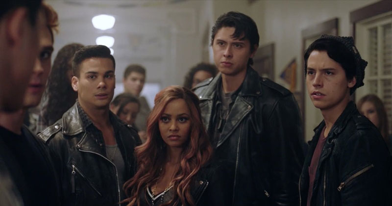Головні герої
Арчібальд (Арчі) Ендрюс (Кей Джей Апа) — старшокласник, який починає романтичні відносини відразу з декількома дівчатами. Пише музику і грає на гітарі всупереч батькові та футбольному тренеру. Зустрічається з Веронікою.
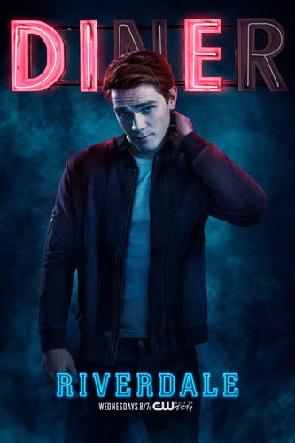Елізабетт (Бетті) Купер (Лілі Рейнхарт) — розумна і мила дівчина, яка давно закохана у свого найкращого друга Арчі. Почала спілкуватися з Веронікою, бо втомилася бути ідеальною дочкою, студенткою і сестрою. Зустрічається з Джагхедом.
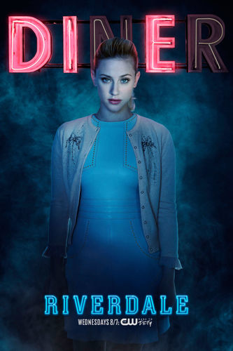Вероніка Лодж (Каміла Мендес) — розумна, впевнена в собі старшокласниця, яка повертається в Рівердейл з Нью-Йорка, намагаючись почати нове життя після скандалу, пов'язаного з її батьком. Зустрічається з Арчі.
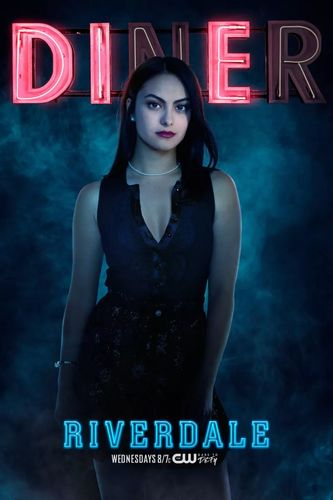Джагхед Джонс (Коул Спроус) — колишній найкращий друг Арчі, який досі страждає через розрив їхньої дружби. У ході серіалу вони відновлюють дружбу. Зустрічається з Бетті.
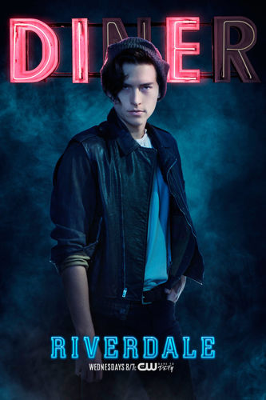Шеріл Блоссом (Маделайне Петш) — багата дівчина-маніпулятор, яка нещодавно втратила брата-близнюка під час загадкової катастрофи. Капітан команди з чирлідингу, найпопулярніша дівчина в школі.
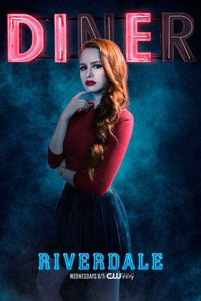Фредерік (Фред) Ендрюс (Люк Перрі) — батько Арчі, який володіє будівельною фірмою. Сподівається, що син коли-небудь очолить родинний бізнес.
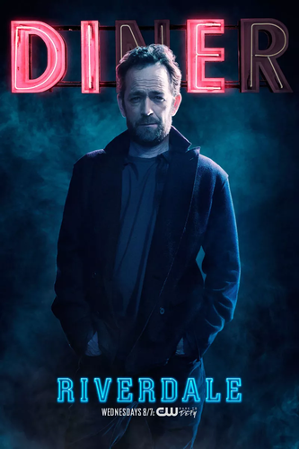Еліс Купер (Медхен Амік) — мама Бетті, редактор місцевої газети. Вона перфекціоніст, звалює занадто високі очікування на свою дочку.
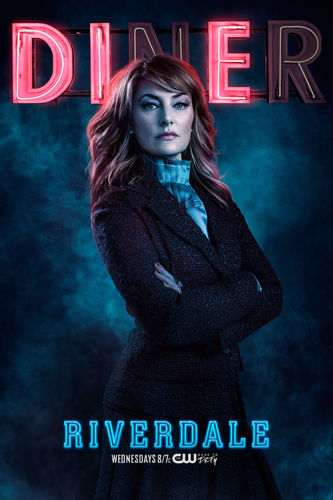Джозі МакКой (Ешлі Мюррей) — зарозуміла та амбіційна дівчина, яка є солісткою музичної групи «Джозі та кішечки».
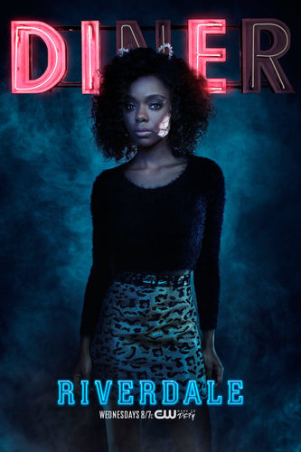Герміона Лодж (Марісоль Ніколс) — мама Вероніки.
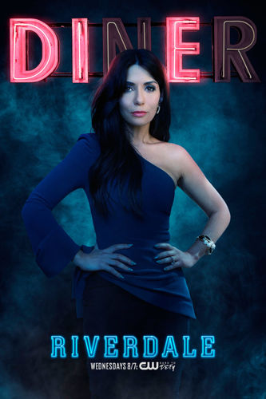Сутінкові мисливці
Сюжет
Сутінкові Мисливці розповідають про 18-ти річну Клері Фрей, яка у свій день народження дізнається, що вона не та, ким себе вважає, а насправді походить зі стародавньої лінії Сутінкових Мисливців - гібридів ангелів і людей, які полюють за демонами. Коли викрадають її мати Джослін, Клері поринає у світ полювання на демонів з містичним Сутінковим Мисливцем Джейсом і її найкращим другом, Саймоном. Тепер вона живе навколо фейрі, магів, вампірів і перевертнів.
1 сезон
У вісімнадцять років деякі хлопці і дівчата відчувають безліч труднощів, тому що вони стикаються з реальними проблемами. До цього моменту за них усе вирішували батьки, а тепер прийшов час подорослішати. Юна героїня фантастичної історії рівно в день свого повноліття зрозуміла, як бувають суворі будні. Клері Фрэй несподівано з’ясувала, що вона спадкоємиця дуже незвичайної сім’ї, яка звикла називати себе Сутінкові Мисливці. Виявляється, її родичі наполовину ангели, а друга їх частина людська. Цей таємний клан намагається захищати світ від демонів і їх злого впливу. До цієї не зовсім приємної новини додалася ще одна. Хтось викрав мати дівчини, і невідомо, де вона і що з нею. Клері вирішується відправитися на пошуки своєї мами, але розуміє, що сама навряд чи знайде її. Тоді вона просить про допомогу свого друга на ім’я Саймон. Хлопець охоче погоджується врятувати свою подругу з біди. Джейс, що вважає себе одним з мисливців, теж вирішив приєднатися до хлопців і допомогти їм відшукати зниклу жінку. Разом у них більше можливостей її знайти. В ході подій героїня якимось дивним чином потрапляє в іншу реальність. Вона здійснила подорож в часі і опинилася в іншому світі. Що це за місце?
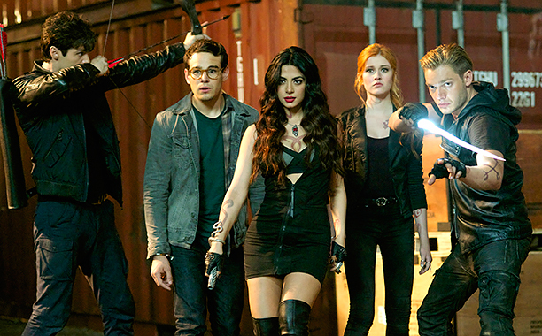2 сезон
На початку 2-го сезону кудись пропадає Джейс, і всі хлопці з Інституту починають його шукати. З'ясовується, що хлопець виявився в складній ситуації, але Клері з друзями вдається його врятувати. Правда, їх дії привертають увагу Клейв, що може бути дуже небезпечно ...
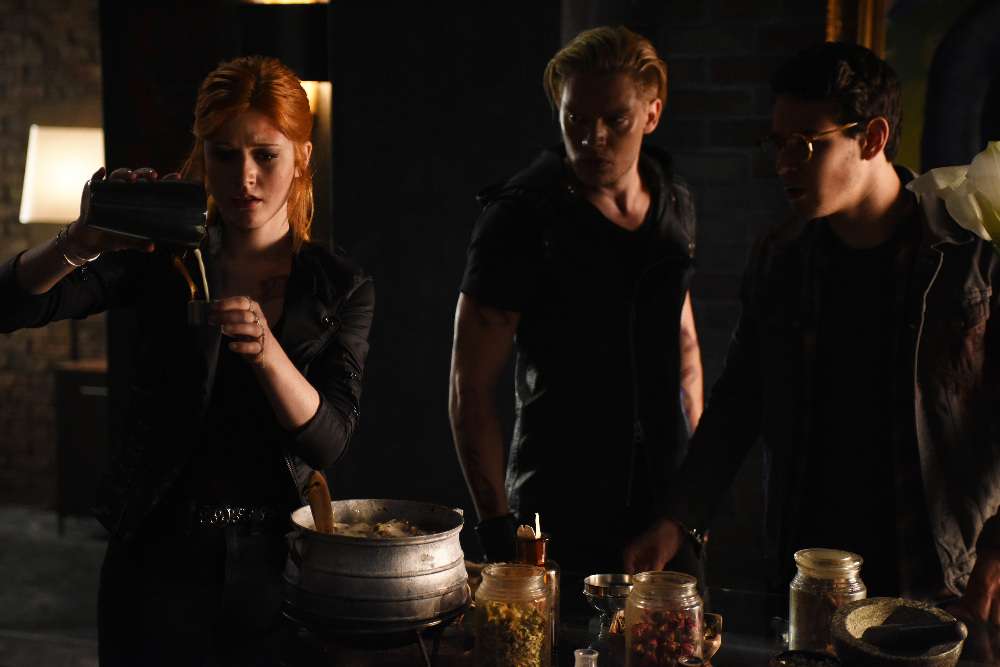Головні герої
Кларісса (Клері) Фейрчальд (в ролі акторка Кетрін МакНамара, Софія Уеллс в ролі молодої Клері) - 18-літня студентка університету мистецтв в Нью-Йорку. Її світ змінився, коли її маму викрали, і вона дізнається про свою надприродну долю — вона сутінковий мисливець (гібрид людини-ангела).
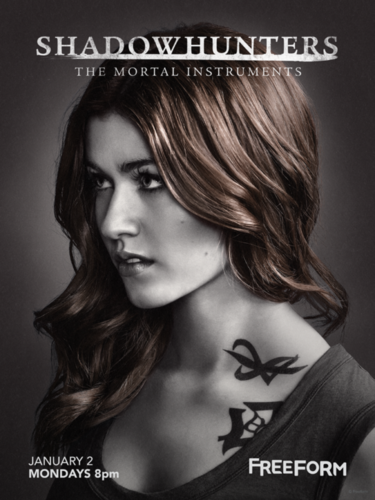Джейс Вейланд (Ерондейл, Моргенштерн, в ролі Домінік Шервуд)- cутінковий мисливець; один із найсильніших воїнів у війні проти демонів. Прийомний брат Ізабель та Алека Лайтвудів. парабатай Алека Лайтвуда. Коханий Клері.
Саймон Льюїс (в ролі Альберто Розенде) - звичайна людина (у сутінковому світі — примітивний) згодом стає мешканцем нижнього світу - вампіром, студент бухгалтерського обліку, давній приятель та найкращий друг Клері. Володіє великим почуттям гумору. Закоханий в Клері, але згодом зустрічається з Маєю.
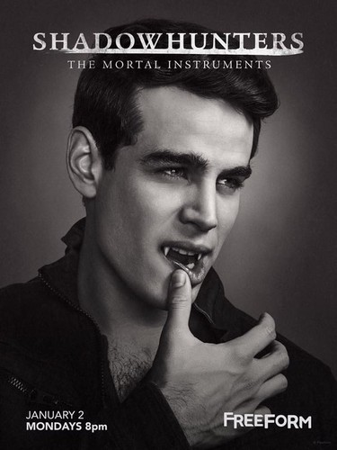Ізабель (Іззі) Лайтвуд (в ролі Емерод Тубіа) - сутінковий мисливець; сестра Алека; приваблива власниця батога, яка бореться разом зі своїми братами проти темного світу. Не дивлячись на войовничу силу, має одну слабкість: погані хлопці.
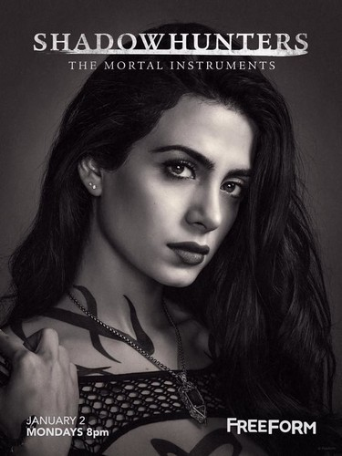Алек Лайтвуд (в ролі Меттью Даддаріо)- cутінковий мисливець; рідний брат Ізабель, вправний воїн. Постійно намагається привернути до себе увагу свого парабатая та зведеного брата Джейса. Стає головою Інститу, зустрічається з Магнусом.
Магнус Бейн (в ролі Гаррі Шам мол.)- могутній верховний маг Брукліна, на перший погляд йому не більше 20-ти років, але насправді його вік понад 800 років. Завжди готовий допомогти сутінковим мисливцям, зустрічається з Алеком.
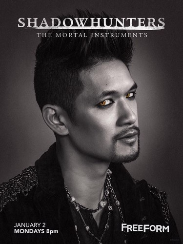Люциан (Люк) Герроуей (в ролі Айзая Мустафа) - вітчим Клері, детектив поліції Нью-Йорка, колишній сутінковий мисливець та парабатай Валентина Моргенштерна, лідер клану перевертнів. Головним його обов'язком є захист Клері після того, як викрали її маму
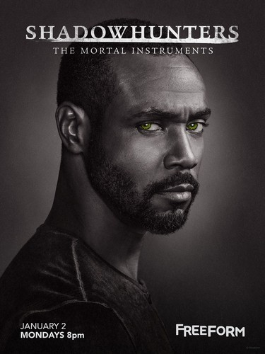Гра Престолів
Сюжет
Сюжет заснований на фентезійній сазі Джорджа Мартіна «Пісня льоду й полум'я»; кожному сезону відповідає одна книга гепталогії, з яких наразі написано п'ять. Події книг відбуваються на фоні політичних інтриг і, пізніше, громадянської війни в боротьбі за владу над вигаданим континентом Вестерос. Роберт Баратеон (Марк Едді), король Семи Королівств, просить свого старого товариша Еддарда Старка (Шон Бін) стати його новою Правицею — головним радником. Едард, підозрюючи, що його попередник на цій посаді був убитий, приймає посаду, щоб розслідувати обставини загибелі та захистити короля. У той же час родичі королеви, Ланністери, намагаються взяти Вестерос під свій повний контроль. Паралельно за морем останні представники раніше поваленої королівської сім'ї Таргарієнів розшукують союзників, здатних повернути їм трон Семи Королівств. Конфлікт між цими та іншими сім'ями, в тому числі Грейджоями, Таллі, Арренами та Тіреллами, призводить до війни. Між тим, на півночі, пробуджується забуте зло. Серед війни і політичної плутанини, невелике братство, Нічна варта, залишається єдиним, хто стоїть між світом людей і цим жахом.
Сезон 1
Колишній правитель Штормових Земель Роберт Баратеон, король-узурпатор Семи Королівств, просить свого старого друга, зберігача Півночі Еддарда (Неда) Старка стати його новим Десницею - головним радником. Неда Старка протистоять дружина Роберта, королева Серсея, і її батько, хранитель Заходу Тайвін Ланністер. В ході першого сезону конфлікт між Старк і Ланністера розростається, і після смерті Роберта на полюванні і сходження на престол сина Серс, принца Джоффрі, лорда Еддарда заарештовують і страчують, а в державі спалахує міжусобна Війна П'яти Королів. Джон Сноу, який вважається незаконнонародженим сином Еддарда Старка, надходить на службу в братство Нічний Дозор, яке охороняє титанічну крижану Стіну на далекій півночі Семи Королівств. Варті і всьому Вестерос загрожує таємнича небезпека - напівказкові Білі Ходаки, що мешкають в землях за Стіною і командувачі армією мерців. На сході, в Пентосе на території континенту Ессос принцеса Дейенеріс Таргаріен - нащадок будинку, який правив в Семи Королівства і знищеного Робертом Баратеонов, - з примусу брата виходить заміж за Кхала Дрогобич, вождя кочівників-дотракійцев. Після смерті Дрогобич Дейенеріс стає матір'ю трьох маленьких драконів, єдиних в світі.
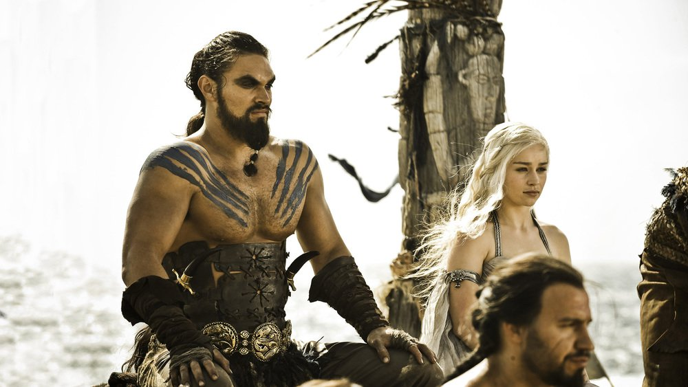Сезон 2
Хоча Залізний трон Семи Королівств займає Джоффрі Баратеон, брати покійного Роберта - Ренлі і Станніс Баратеони - незалежно один від одного оголошують себе королями і вступають у війну один з одним і іншими претендентами. Робб Старк, старший син Еддарда, проголошений Королем Півночі, продовжує війну з Тайвіна Ланністера, а син Тайвіна, карлик Тіріон, на короткий час виявляється де-факто на чолі держави як Правиці. Станніс, убивши Ренлі за допомогою чорної магії і заволодівши його армією, намагається захопити столицю Семи Королівств, але завдяки хитрості Тіріона і союзу Ланністерів з могутнім будинком Тіреллов зазнає поразки в битві при річці Черноводной. Далеко на Півночі маленьке військо Нічного Дозору на чолі з його керівником Джіора Мормонт виступає в засніжені землі за Стіною, стикаючись з ворожими дикунами - здичавілі, які називають себе вільним народом і з давніх часів воюють з чорними братами і лордами Півночі. На сході Дейенеріс Таргаріен, подолавши Червону Пустелю, відвідує багатий торговий місто Кварт і занурюється в павутину інтриг; квартійци заволодівають її драконами, але Дейенеріс вдається повернути їх
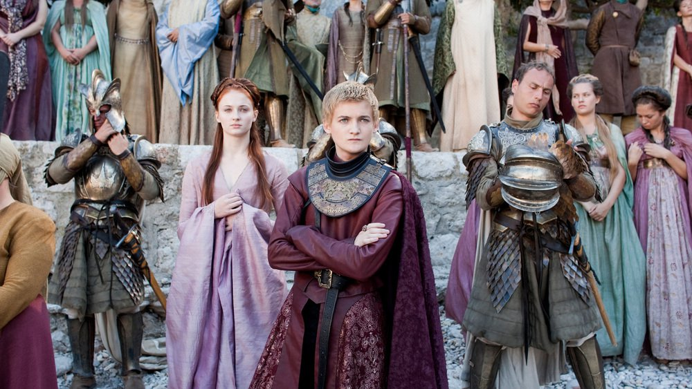Сезон 3
Король Джоффрі готується до весілля з Маргеріт Тіреллі, а Тіріона примусово одружують на Сансі Старк, старшої дочки лорда Еддарда. Станніс Баратеон після поразки віддаляється на Драконівські Камінь, але знову набуває впевненості завдяки жриці Мелісандра і бувалому контрабандисту Давосу Сіворту. Робб Старк порушує обіцянку одружитися на одній з дочок Уолдера Фрея, за що його разом з матір'ю і дружиною зрадницьки вбивають в замку Близнюки в річкових Землях. У землях на півночі Джон Сноу вимушено приєднується до здичавілим на чолі з їх лідером мансі нальотчика і відправляється на вилазку; в складний момент він зберігає вірність богам і Дозору. На сході Дейенеріс Таргаріен відвідує міста Затоки работорговців і виявляється на чолі армії звільнених рабів і найманих рабів-воїнів Бездоганних.
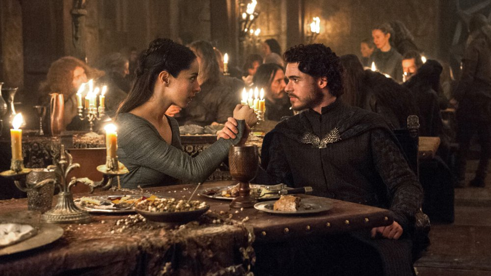Сезон 4
Санса вибирається з Королівської Гавані завдяки колишньому члену Малої Ради Петир Бейлиш. На Тіріона покладають провину за отруєння короля Джоффрі. Джеймі допомагає Тіріона бігти. Дейенеріс підпорядковує собі головний з міст Затоки работоргівців - Міерін, але потім події починають складатися зовсім не так, як вона припускала. Теона Грейджой, зломлений тортурами бастарда лорда Русе Болтона Рамсі Сноу, остаточно перетворюється на слугу свого мучителя - Вонючку, а Бран зустрічає найдивовижніших створінь з усіх, що коли-небудь існували в Вестеросі.
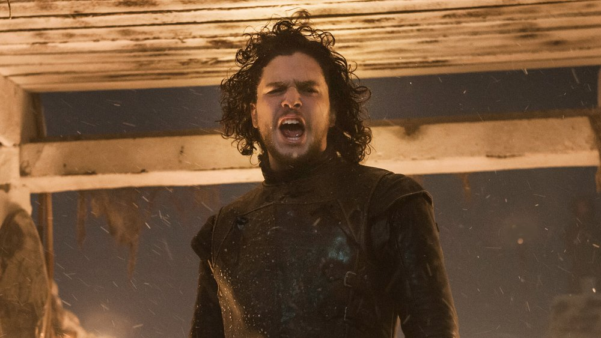Сезон 5
Сезон сконцентрований на королівстві Дорн і дочок принца Оберіна Мартелла, прозваних Піщаними змійкою. Дейенеріс стикається із загрозою всередині Міеріна. Джон Сноу лицем до лиця зустрічається з жахами застенного. Арья вибирає шлях служіння багатолика Богу Смерті. Влада в Королівській Гавані фактично переходить до релігійних фанатиків «горобцях», а союз Ланністерів і Тіреллов дає тріщину.
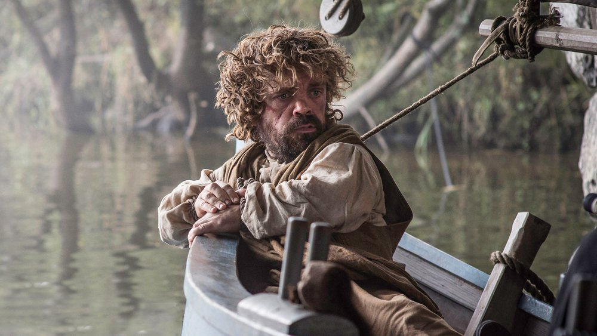Сезон 6
На Залізні острова з вигнання повертається молодший брат Бейлон Грейджоя - пірат Еурон на прізвисько Вороний Око, який має намір завоювати Вестерос. Дейенеріс Таргаріен повертається в столицю дотракійцев. Санса знаходить на Півночі підтримку проти Болтона. Серсея і Джеймі об'єднуються проти «горобців». Бран Старк вчиться видінь у Трёхглазого Ворона. Вестерос загрожує навала Інших, а Джон Сноу повертається зі світу мертвих.
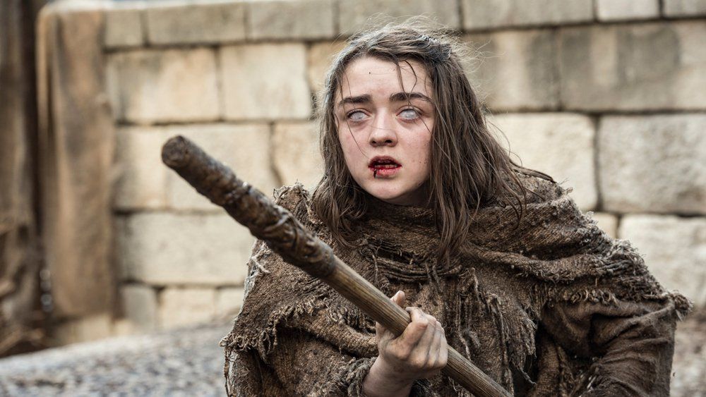Сезон 7
Серсея намагається правити Вестерос, незважаючи на те, що союзників у неї не залишилося. У річкових Землях починається боротьба за Ріверрана після смерті лорда Близнюків Уолдера Фрея, а також тривають сюжетні лінії Брієнном Тарт, Сандора Клігана і Братства Без Прапорів. Теона і Яра Грейджой разом з Дейенеріс Таргаріен збираються знищити Еурона Грейджоя. Оленів Тіреллі, уклавши союз з Еллара Сенд, Варіс і Дейенеріс Таргаріен, має намір помститися серсо Ланністер, що знищила її сім'ю. Джон Сноу, будучи королем Півночі, готується до бою з Іншими. Семвелл Тарле в Цитаделі Староместа проходить навчання, щоб стати мейстер. Після перемоги Дейенеріс над Синами Гарпії в Затоці работорговців Даар Нахаріс управляє Міеріном, Тіріон Ланністер відправляється в Вестерос разом з Дейенеріс, Варіс, Теоном і Ярою Грейджоя, а сир Джорах Мормонт намагається вилікуватися від сірої хвороби за допомогою Семвелла.
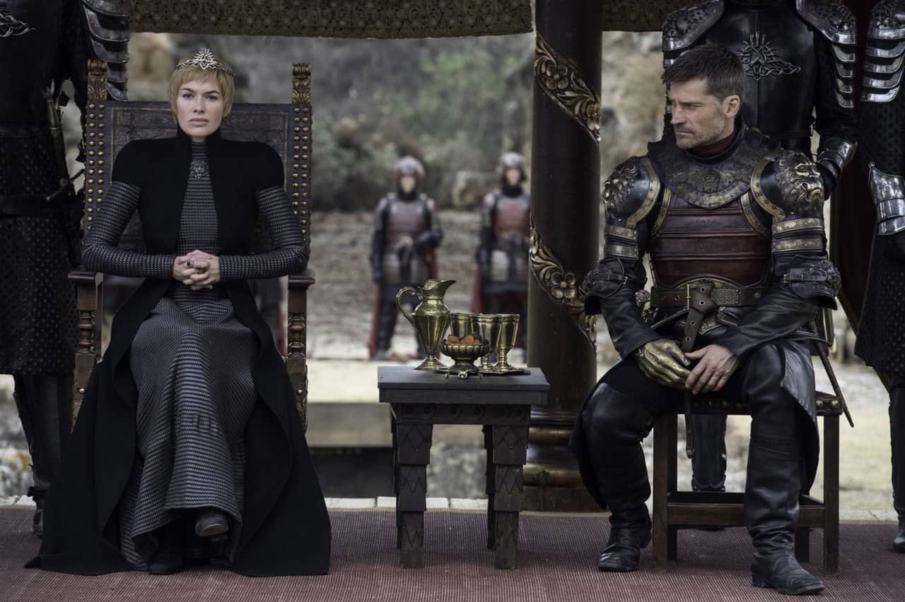Головні герої
Джон Сноу — незаконнонароджений син Еддарда Старка і невідомої жінки. Було припущення, що його мати була годувальницею в одній із знатних родин на ім'я Вілла, але це не було підтверджено, оскільки Нед був страчений раніше, ніж зміг все розказати, Джону, хто його мати. Його супутник лютововк, тихий, альбінос на ім'я «Привид».
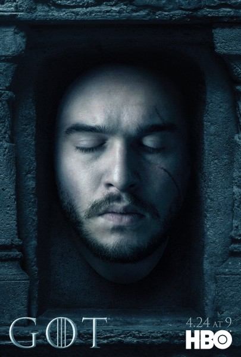Дейнеріс — молода дівчина, що живе в Ессосі за вузьким морем. Не знаючи іншого життя, аніж вигнання, вона залишається підневільною свого жорстокого старшого брата, Візеріса. Візеріс, щоб здобути велику армію, повернутися з перемогою до Вестеросу та стати королем, організовує заручини лагідної та тендітної Дейнеріс з дотракійським кхалом Дрого.
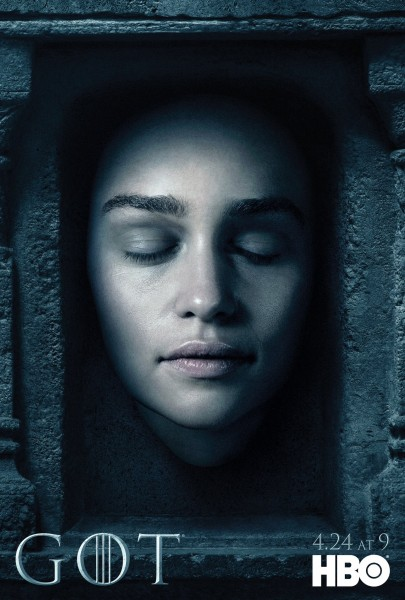Серсея є найстаршою дитиною і єдиною дочкою лорда Тайвіна Ланністера і його дружини леді Джоани. Вона є сестрою-близнюком сера Джеймі Ланністера, з яким має кровозмісні відносини (інцест). За п'ятнадцять років до подій першої книги Серсея вийшла заміж за короля Роберта Баратеона і стала королевою Семи Королівств, однак вона ніколи не любила і не поважала чоловіка-короля. У неї троє дітей, народжених у шлюбі з Робертом, проте насправді батьком всіх трьох є Джеймі
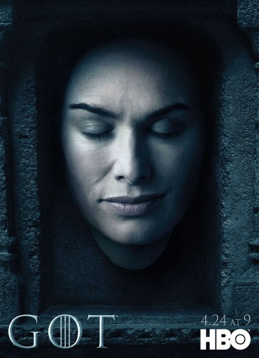Тиріону Ланністеру близько 23 років. Тиріон — карлик, з очима різного кольору (чорне і зелене), і рябим волоссям (світле і темне). У битві на Чорноводній Тиріон втратив частину носа, що зробило його ще більш потворним.
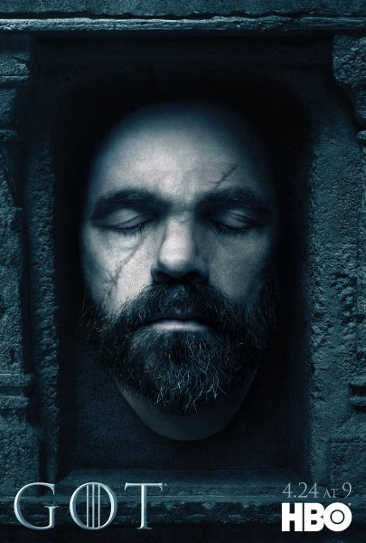Арія — молодша дочка Лорда Еддарда Старка і його дружини Леді Кейтілін Старк. Вона норовлива, незалежна, зневажає традиційні жіночі заняття, і її часто приймають за хлопчика. У неї є меч, названий Голкою (подарунок Джона Сноу), також вона навчалася браавосійському стилю битви на мечах.
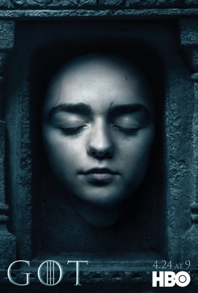Санса — старша дочка лорда Еддарда Старка з Вінтерфеллу та його дружини Кейтелін Старк, їхня друга дитина. У неї є чотири брати і сестра. Після того, як Еддард Старк прийняв пропозицію Роберта Баратеона стати Правицею, Санса повинна була вийти заміж за сина Роберта Джоффрі Баратеона.
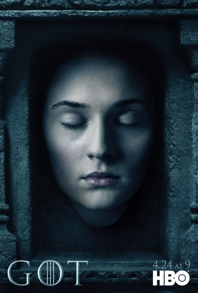Хайме Ланністер - старший син Тювіна, молодший брат-близнюк Cерсея, і старший брат Тіріона Ланністер. Він втягується в кровожерні стосунки з Cерсеєм, котрі невідомі для більшості, він біологічний батько трьох дітей, Жоффрі, Мірцелла та Томмен.
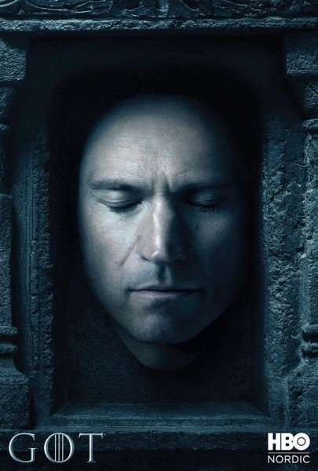